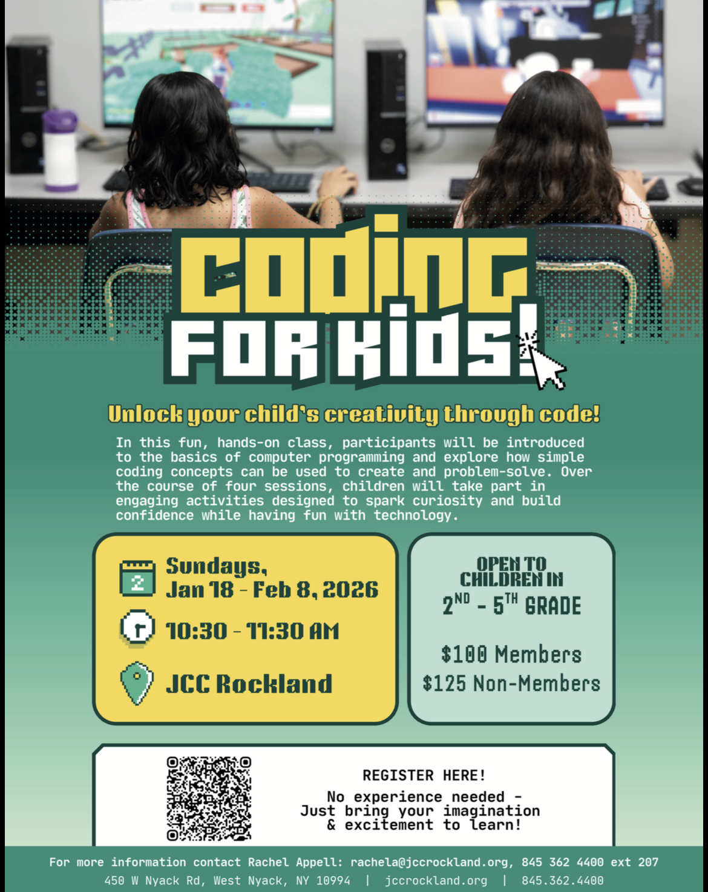
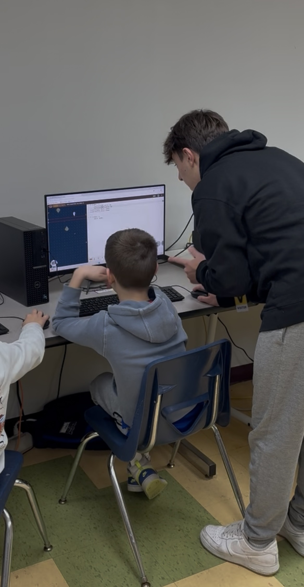

A Computer Science Class for Grades 3–5
When I was in elementary school, I had a "coding" class. In this class, we learned about block coding through various websites similar to code.org. Even though we were only supposed to work until a certain level each class, sometimes I couldn't help but skip ahead of everyone else and try to complete as many as possible. The explanations of the levels and concepts felt simple to me, and I believe this is where my passion for computer science started.
This year, I decided that I would do a community service project to set me apart in my college applications, and I got the idea to teach a class in one of my favorite subjects: computer science.
Over my three years of computer science classes, I've learned not only how to make games, but how to problem solve better and think logically. This thought process is one of the biggest benefits of learning computer science, and I wanted to share it with younger students. I also wanted to show them how fun and rewarding coding can be, and hopefully inspire some of them to pursue it further in the future.
I decided I wanted to teach this class to students who were at the age where I first got into computer science, being 3rd-5th graders. I used CodeMonkey, a website similar to code.org, to teach the concepts of "if's" and "loops" the same way I originally learned it.
With the help of Mr. Uhl, I developed lesson plans for the kids, starting with an exercise that didn't involve computers to introduce the concept of coding being a list of commands (unfortunately, my dad didn't take any pictures of this). Then, we moved on to the CodeMonkey website, where I taught them how to use "if's" and "loops" to solve puzzles. The students were very engaged and excited to learn, and it was rewarding to see them understand the concepts and apply them to solve the puzzles.
The class ran for 4 weeks, spread out over 2 months, and I feel like I learned just as much teaching the kids as they learned from the course. I had a really great time and everyone involved seemed to enjoy it, which is all I could have hoped for.

